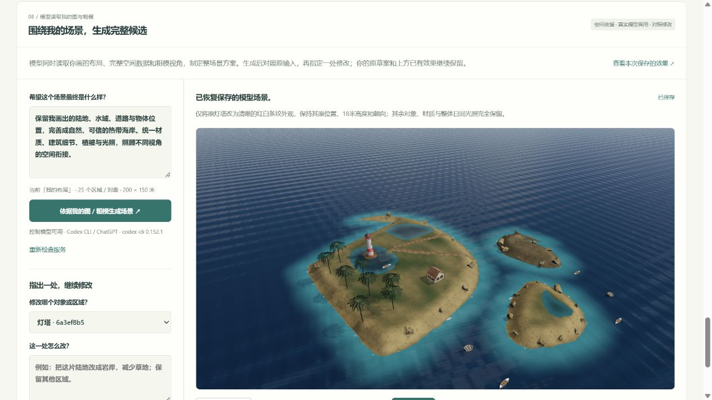
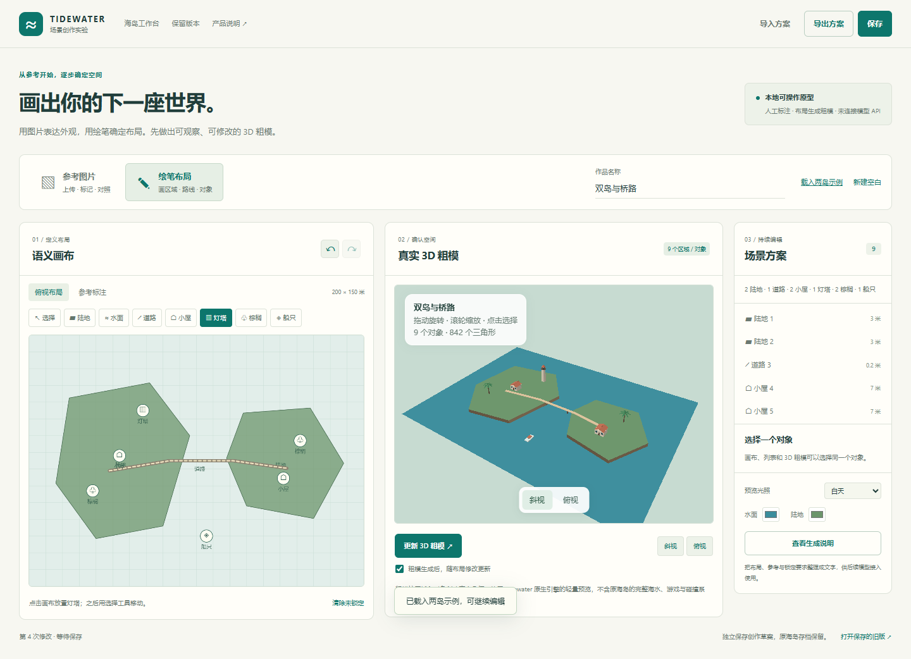
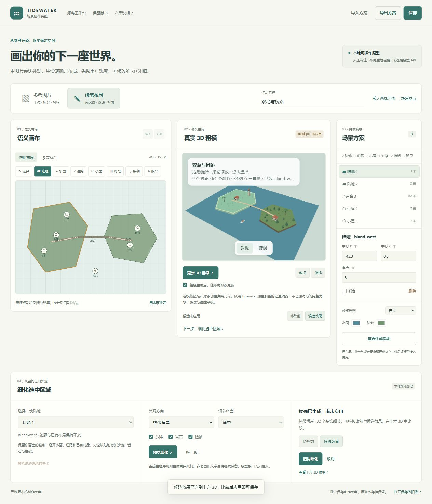
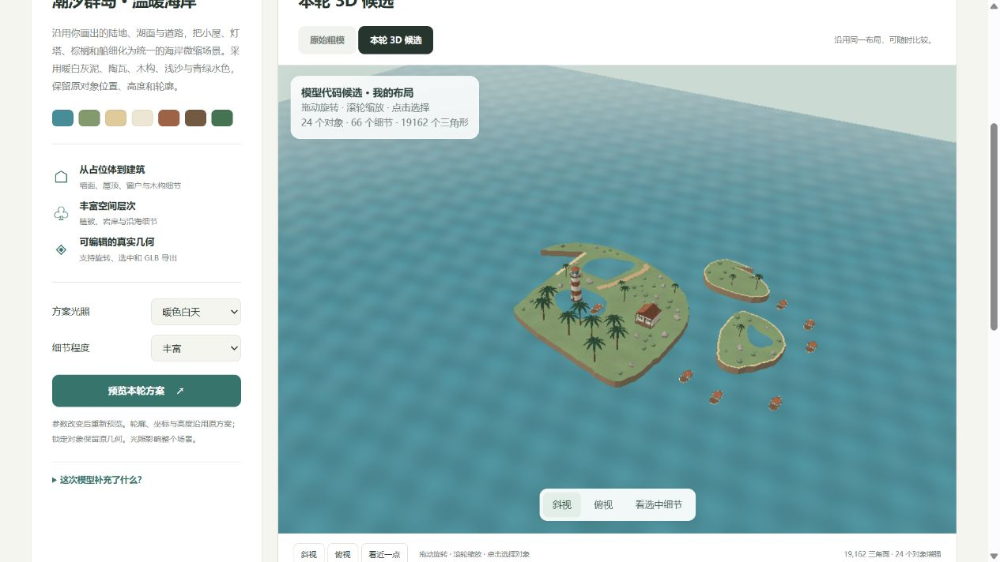
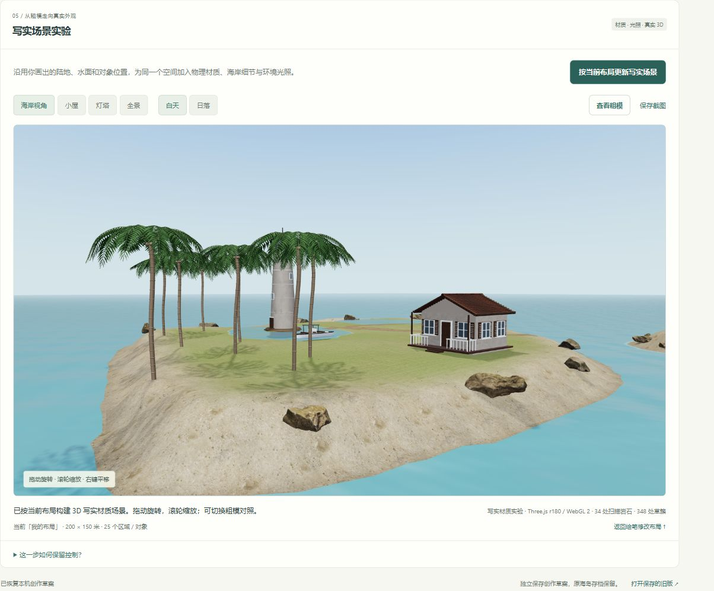
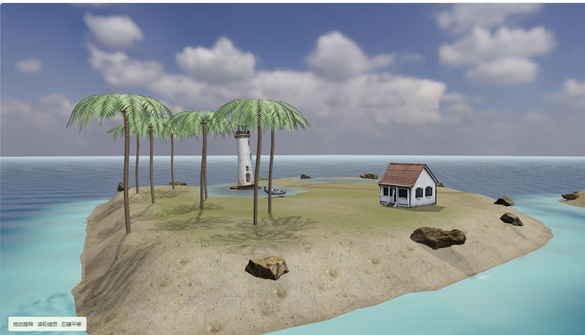
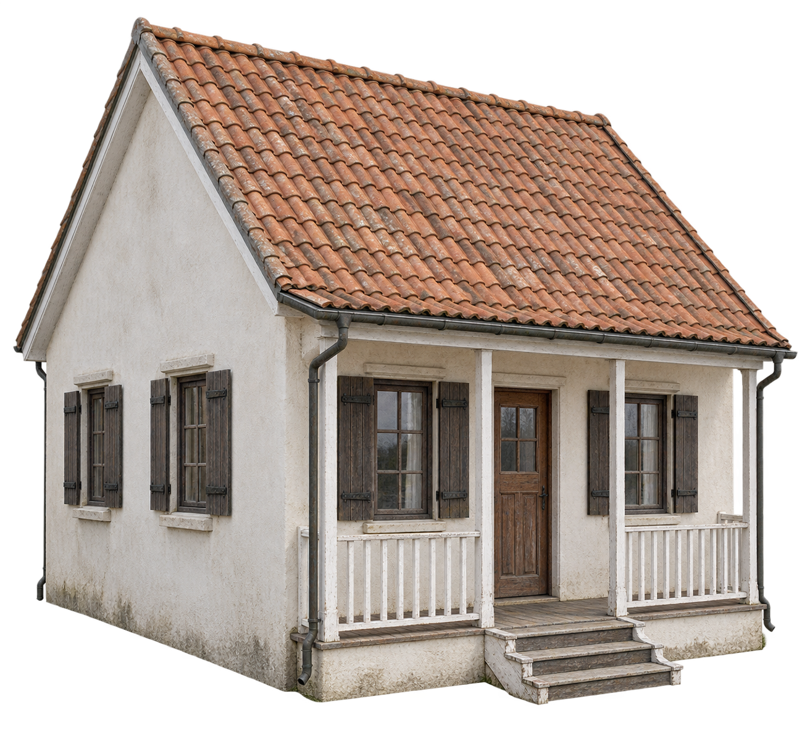
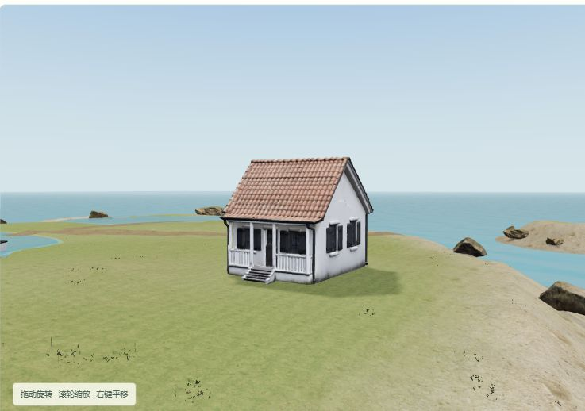

海水与岸线
远海波面、冲岸浪、泡沫、喷溅、尾流、焦散和水下水线。
四级 256² FFT 波谱 + 岸浪与泡沫纹理模拟 + 水材质反射/折射。
OceanFFT原三岛25个对象、17个细化物体与4轮历史继续沿用。已补齐模型部件生成、局部保护、GLB和独立工程交付；在线版展示已有成果，新生成需本机服务。查看完整成果与控制产品思路 ↗ · 浏览原场景 ↗
产品目标是以你画的图或对应粗模为依据，由模型完善完整 3D 场景，再对照输入检查一致性。当前第 08 步已真实调用控制模型，同时读取绘笔布局图、完整空间数据与粗模多视角，制定覆盖原对象的场景方案，再由场景工具执行。原呈现已独立保存；当前已生成模型定义的部件网格并实现局部保护和项目交付；任意形态与最终写实品质仍需继续验证。

01 / 库的能力
Tidewater 是自研引擎上的浏览器海岛钓鱼应用。它尚未封装为通用编辑器 SDK；当前版本适合研究、fork 和接口改造。
远海波面、冲岸浪、泡沫、喷溅、尾流、焦散和水下水线。
四级 256² FFT 波谱 + 岸浪与泡沫纹理模拟 + 水材质反射/折射。
OceanFFT时段变化、太阳与月亮、体积云、云影、大气和空气透视。
Hillaire 大气 LUT + 体积云光线步进 + 时间复用；默认 SkyProClouds。
Atmosphere地形、村落、码头、植被、海滩道具、角色、鸟、鱼、蟹和鲸。
程序几何与外部资产组成世界，自研 WebGPU/WGSL 引擎逐帧渲染。
App 世界组装步行、游泳、驾驶船、18 种鱼、搏鱼张力、出售与装备升级。
输入与角色控制、船体水面采样、数值状态机、栖息地/时间概率。
Game代码驱动 3D 场景与渲染；扫描道具、纹理、人物动画和录音有外部来源。海浪是实时图形近似，不能据此用于工程水动力预测。查看固定版本的资产与技术来源。
02 / 当前产品 已实现
本次实现了固定海岛的本地编辑闭环。正在探索的下一步面向滨水场景与关卡创作者，支持从布局创建不同场景；目标用户与付费需求仍需验证。
原地形、村落与岸线不能任意编辑。六个对象来自固定注册表，新增物体没有新增碰撞、导航或真实点光源。
原海岛工作台的预设只改环境，文字动作采用本地解析。真实模型资产生成另接在创作页第 06 步；账号、云发布、视频与任意世界创建仍未实现。
“生成一座全新城市”需要新的世界系统，超出原工作台动作范围。
03 / 理解探索 后续设计
一句话可以开始创作。持续可控的创作，还需要把布局、对象、关系与已确认内容保存下来，让下一轮生成有明确依据。
图与粗模表达同一份创作意图，不要求重复输入；外观参考、文字、资源与规则用于补充要求。控制模型实际读取这些输入，组织生成与修正；用户面对的是一项完整场景任务。内部可以分阶段完成。
验收检查：空间是否忠于已确认的岸线、道路、对象位置与关系；材质、尺度、光照与多视角是否协调；局部修改是否保留其他已确认内容。草图未表达的细节可以补全，改变原有空间决定应明确展示。
第 08 步已接通：本机 Codex 控制模型读取完整布局、绘笔图和粗模视角，输出覆盖所有原 ID 的材质、形态处理、植被密度、微地形和光照方案。局部任务保留全局环境与范围外记录；程序检查通过后才显示候选。当前执行器限于七类海岸对象／区域，尚未自由生成任意网格，也没有自动视觉验收或自主修复循环。打开模型控制实验 ↗。
让模型自由改写整个场景代码，可以产生新的内容；仅靠提示，无法保证只修改某个区域、保留其余结果或稳定满足全部要求。
创作目标要逐步转成可执行的布局、对象修改范围与验收条件。
产品保存对象身份、位置、关联、锁定状态和版本，模型按这些依据提出修改或生成新组件。
数量、距离与连通等要求由程序检查；风格、氛围与“像不像”仍由用户判断。
新岛屿、新建筑和新布局，需要新的地形与对象创建接口。当前六个对象的控制不能自动覆盖任意生成世界。
新内容接入统一的场景结构后，才能继续选择、局部修改、恢复和交付。
图片适合确认构图、材质与氛围；单张图没有完整的尺寸、背面与遮挡关系。生成 3D 时应同时读取原始布局和对象标记，未展示的空间需要补全并通过不同视角检查。相关研究中的图像、相机与几何条件。
产品既帮助生成，也负责保存、编辑与运行生成后的世界。
指定模型、材质和角色，保留必须使用的资产。模型可以补充新的组件。
保存对象数量、尺寸、间距、连接和修改范围。几何校验、碰撞与导航需要相应模块。
定义触发器、任务状态、角色行为和通关条件，并在试玩时执行。
支持点选、锁定、局部生成、方案比较、撤销和恢复，保存可继续编辑的工程。
04 / 创作流程 粗模、模型控制与候选
上传图片或绘制布局，确认可编辑粗模。第 08 步已把整片场景的布局与多视角实际交给控制模型；第 06 步保留单对象图片到 GLB 的实验。任意精细世界生成、图片识别与网页逐次生图仍需继续建设。
第 08 步真实调用本机已登录的 Codex CLI，发送完整 plan、绘笔图与粗模多视角；有原始参考图时也发送。模型制定整场景方案，执行器直接采用原轮廓、位置、高度和对象 ID，在独立 3D 预览中构建结果。用户可以同视角对照粗模、检查另一侧、从场景中选中对象、指定区域修改、确认保存、回退或导出输入与任务来源。进入这一轮实际实验 ↗。
首轮任务 96f55ca7-f641-404f-9c1e-15828eb92cc5 已读取 25 个原对象、一张布局图与两张粗模视角；这份布局没有上传原始参考图。局部任务 ea5f69c9-dc90-4e93-9b4b-7df76581e0b4 增加修改前完整候选，共读取四张实际图片，仅把灯塔改为红白条纹；其余 24 项外观记录和全局环境完全相同。源布局指纹 plan-v1-162afc9e3f46f3aa-22227 保持。保存后已刷新恢复，并导出完整输入、方案与真实模型回执。
当前工具支持材质与外观方案、已有神经模型和程序几何。当前画面仍是受这些能力限制的候选，任意精细网格生成和自动视觉验收尚未实现。实际提供者为 Codex CLI / ChatGPT，未调用 Opus；具体模型 ID 未在回执中返回。
推进前完整保留了当前呈现及实际资源，579 项文件哈希已核验。打开本次保存的只读效果 ↗。这个回放恢复原镜头预设和 25 个原对象，不调用模型、不写入当前草案。
当前页第 08 步继续扩展。模型读取同一份图／粗模，定义新的门窗、屋顶、灯室、栏杆、树叶和船体；执行器按原对象归位与检查，再导出静态可编辑 GLB 和自包含网页工程。细部候选可以选择“选中对象”“同类对象”或“整个场景”继续完善。局部任务只返回指定对象的新部件，由程序合并，并重新核对范围外的几何、共享模板、材质和朝向；不能靠一句提示词声称其余物体没变。
已用真实任务单独修正八棵棕榈，其余九个物体的几何依赖保持一致。第一轮薄叶偏疏，将实际近景反馈后第二轮生成了更完整的羽状叶片。当前是控制模型编写部件网格，材质图与环境沿用已有资源，外观仍较规则；写实品质、多角度连接与性能需继续验收，尚不能保证任意粗模一次达标。体验当前扩展 ↗ · 上一步精细版回放 ↗ · 跨布局验证工具 ↗

支持 PNG、JPEG 和 WebP，也可载入现有海岛截图。标记区域和对象，填写想保留的外观，再切到俯视布局校正位置与距离。
图片投影不代表真实空间。当前将标记作为用户定义的布局草案，尚未自动恢复深度、形状或材质。
打开参考图片入口 ↗拖动画陆地、水面或道路，点击放置小屋、灯塔、棕榈和船。生成真实几何粗模，换角度检查，再移动、改高度、锁定或细化选中陆地。
轻量预览复用 Tidewater 原生引擎；本地细化不调用模型。精细小屋可在第 06 步由图片生成，完整海水、碰撞导航与玩法仍需接入。
打开绘笔布局入口 ↗在“细化选中区域”选择热带海岸、岩岸草甸或花园岛，设置密度和沙滩/岩石/植被开关。“修改前/候选效果”用于比较，“换一版”提供另一个候选。候选临时显示，应用后才进入草案、撤销历史与 JSON；其他草案修改或切换目标会取消候选。已有细化可以移除。原陆地轮廓、水域、道路与标记保留，锁定陆地需要先解锁。
本轮最多同时细化 5 块陆地，每块最多 48 个装饰；各地块独立使用预算，新增细化不挤掉已确认区域的细节。参考图和外观文本不会自动驱动当前细化。保存使用独立 IndexedDB；修改前的海岛页面与源文件、截图及校验清单已另行保留。


编码模型编写海岸建筑、棕榈、船只和程序材质方案。独立页面读取已保存布局，用原坐标、高度与轮廓重建真实 3D，比较粗模与固定候选。锁定对象沿用原几何；方案独立保存，GLB 包含按原 ID 命名的对象。打开保留的代码候选 ↗。
该候选页运行的是开发期已经写好的代码，没有逐次在线模型调用，也不会自动理解新的文字或参考图。新的真实图片到 3D 生成已另接入当前创作页第 06 步。

第 05 步沿用陆地、水面、道路与对象位置，组合 PBR 物理材质、扫描岩石、草地资源与 HDRI 环境光照。支持海岸/建筑/全景、白天/日落与粗模对照；修改布局后显式更新，不自动改写草案。打开当前页材质实验 ↗。
这一步来自编码模型编写的本地组装代码，使用 Three.js WebGL2，原粗模仍使用 Tidewater WebGPU。它并没有生成新的神经模型资产，几何数量和贴图不能证明已经达到真实世界品质。
推进前已保存 455 个网页与资源文件，以及用户 25 个区域／对象的冻结布局。打开上一版只读回放 ↗ 可以旋转检查，不写入当前草案；完整文件清单 保留 SHA-256，布局指纹为 plan-v1-205c416bbb9a2967-22228。

先由内置图像生成工具制作小屋外观参考，再调用 Microsoft 官方 TRELLIS.2 Space。本轮已成功得到 98,320 个三角形、80,777 个顶点的 真实 GLB，内嵌两张 WebP PBR 纹理，大小为 4,859,472 bytes（约 4.63 MiB）。这不是图片贴在平面上的效果。
模型是 microsoft/TRELLIS.2-4B，本接口以单张图片为条件；文字只记录外观要求，Opus 没有直接生成图片或 3D。产品将网格底部归零、等比装入粗模尺寸边界，再按原 ID、X/Z 与支撑高度回填；锁定和源布局变化会阻止应用过期候选。生成之后，用户仍需检查并确认。
生成任务 7731f838b77c48b69c074368a1cc8bdd；seed 20261005、512³、2048 纹理、100,000 导出目标。参数、输出哈希、生成及导出任务见 来源清单。在当前页面查看模型资产 ↗；加载已有本地结果不会再次推理。第 06 步的新生成可选择本机 TripoSR 或 Microsoft 官方服务；本机选项需要已配置的隔离 GPU 服务和透明背景单对象图片，官方选项受匿名 GPU 额度、排队和可用性限制。
第 06 阶段当时仅生成一间小屋。 保存的该阶段效果中，其余地形、建筑、树木、船只与素材沿用材质版本；后续整场景推进见下方第 07 步。单图不可见部分由模型推测，屋檐等处仍有细节缺陷，建筑内部和真实尺度不能仅凭图片保证。后续价值在于继续生成和修正组件，同时保留已经确定的空间。
第 07 步依据当前粗模，为每个区域与物体建立一项任务。已有精细资产按原 ID、尺度和支撑位置回填；原轮廓、道路、对象位置与锁定保持。打开“完善整个场景” ↗，查看布局约束、实际来源、载入状态、画面采用的来源与待补足资产。
本机 NVIDIA RTX 4070 Laptop GPU 已使用 官方 TripoSR完成真实 CUDA 推理：棕榈 GLB含 69,534 个三角形，灯塔 GLB含 48,290 个三角形，船 GLB含 73,264 个三角形；神经推理分别耗时 3.828 秒、0.922 秒和 4.328 秒，之后另执行网格提取与纹理烘焙。每份产物有一张 1024² RGB 纹理，粗糙度/金属度为明确设定的常量，未生成独立 PBR 贴图；来源、输入输出哈希与设备计时见 棕榈清单、灯塔清单和 船清单。
棕榈推理成功，但薄叶片被重建成粗厚、成团的树冠，尚未通过写实验收。 页面默认“保留原版细叶片”，使用原程序几何；可以切换“神经原始树冠”检查真实输出。这两种来源分别显示，程序细叶片不能冒称为模型修正结果。三维对象可从不同镜头观察；棕榈参考、灯塔参考和 船参考是图像工具制作的输入；本轮三个对象已经得到真实 GLB，仍需检查形态、背面与场景衔接。
新环境继续使用 CC0 实拍 PureSky HDR 作为天空与反射依据，按原岸线距离区分近岸、深水和池塘表现，增加断续岸边浪花。扫描草使用八种高株变体：主屋所在陆地最多 900 簇，其他未锁定陆地各最多 280 簇，对照原版 348 簇；实际数量受面积与障碍影响。受保护的内陆微地形最多起伏 ±0.8 米，保持地基、道路、水岸与锁定范围。这些是本地渲染与程序分布，草、岩石、纹理和 HDR 是既有素材；水色变化不等于重建水下地形或水动力。
连同 TRELLIS.2 小屋，本轮共四种真实生成资产，在保存布局中对应 17 个物体标记：一间小屋、一座灯塔、七艘船与八棵棕榈。默认未逐对象定制时，同种物体明确共用一份模型；全部载入后是 17 份神经候选，默认显示九份，其余八棵棕榈保留程序细叶片。候选数、可见数和独立产物数分别记录，实例数量不表示分别进行了多次推理。任务在真实非空网格载入后才记为资产就绪；是否默认采用、是否通过视觉检查分别记录。失败显示实际原因，确认检查源布局指纹并阻止过期候选。模型/代码的 MIT 许可与输入、输出及混合场景来源分别保留；仍需检查背面、叶片、船体、建筑结构、落地与整体光照。
第 06 步更换单对象参考图、选择模型服务并真实生成 3D，检查后确认保存。第 07 步优先读取完整布局指纹一致的已确认模型，只绑定对应的原对象 ID；其他同类实例继续使用默认资产，未确认候选不会进入整场景版本。默认同类复用和逐对象定制分别记录来源，避免装配时覆盖你已确认的结果。
本机服务启动后可点击“重新检查本机服务”；“查看另一侧”将镜头转到当前对象背面。同一参考图可能得到相同的网格，改变形态需要更换参考图；文字字段只记录要求。粗模负责位置和尺寸边界，当前神经模型按物体图片生成，尚未把整片粗模作为模型输入。



打开可旋转的只读第 06 步效果 ↗：固定保存的 25 个区域／对象和一间真实 TRELLIS.2 小屋，其他内容使用旧版材质环境。可以切换镜头、光照与粗模，不读取或写入当前作品，也不再次调用模型。双副本文件清单记录 SHA-256 一致性。
用区域画陆地和水面，用线画道路，用图标放建筑，用箭头标移动路线。指定比例和必须保留的内容。
用户确定：位置、范围与关系保存区域、对象、尺寸和连接关系。模型识别自由草图后先给出解释，用户可以修正；语义绘笔直接记录类型。
共同依据：可编辑的布局与对象可上传图片；本轮通过内置图像工具制作小屋参考。网页逐次生图与整场景概念图仍需接入。
按绘制的区域、道路与对象创建真实几何，支持旋转、缩放、换视角和点选。
第 06 步可按单对象参考图调用本机 TripoSR 或官方 TRELLIS.2；第 07 步优先装入已确认模型，按原对象 ID 与尺寸组织整场景，神经模型、扫描素材与程序几何分别记录。确认前从不同视角检查，源布局变化后拒绝过期候选。
单对象真实生成可体验；整场景任务与组件重建继续推进指定修改对象或区域，保留已确认部分。按用途添加任务或镜头，验证结果，再保存工程与分享浏览器场景。
下一轮创作继续使用同一份作品一次具体创作
用户画出岛屿和道路，标记村庄、灯塔与码头，再指定 灯塔在高处，村庄有路连接码头
。模型补充造型，概念图确认风格，粗模确认空间。
下一轮要求 码头往东移动，灯塔保持原样
，产品限定修改对象与相关连接，并比较实际改动。玩法阶段再设置 到达灯塔后解锁船只
。
05 / 现有页面扩展 产品路线
语义画布、人工参考、粗模、本地细化、材质组装与单对象模型生成已落地。接下来重点是资产质量、对象与区域范围、资源工程和约束校验；玩法与发布等完整路线继续建设。
从顶部新建、保存和导出扩展命名、封面、复制与版本快照。布局变体属于同一海岛作品；新世界类型另需构建系统。
增加移动、旋转和缩放手柄，多选、对齐与材质属性。操作继续共用撤销历史；真实灯光需接照明系统。
在预设镜头外保存相机姿态、画幅与截图设置。后续时间轴与视频导出还需要时间控制和编码。
| 现有区域 | 建议扩展的界面 | 需要新增的能力 |
|---|---|---|
| 中央 3D 预览 P1 | 布局 / 3D 切换；陆地、道路、区域与对象绘笔；比例和标记 | 保存二维布局、对象身份与空间关系；再接地形和对象创建接口 |
| 下方指令区 P1 | 生成前显示计划、目标区域和将保留的对象；确认后执行 | 模型返回结构化方案；修改范围、版本和事务校验 |
| 左侧对象列表 P2 | 对象 / 图层 / 资源标签；新增、复制、删除、导入与替换；关联画布标记 | 扩展固定注册表，增加可创建对象、资产格式适配、资源销毁与依赖记录 |
| 右侧属性面板 P2 | 尺寸、数量、间距和连接约束；校验结果与修复入口 | 可执行的约束与检查器；路线可达还需碰撞和导航 |
| 预览与镜头工具 P3 | 布局、概念图、粗模对照；固定参考相机与多视角验收 | 图像与 3D 生成服务、相机对齐、预览产物和任务状态管理 |
| 历史 / 保存 / 导出 贯穿各阶段 | 保存布局方案、生成版本和引用资源；局部差异与版本恢复 | 把配置存档扩展为完整场景工程；浏览器分享需发布服务 |
| 进入漫游 P4 | 按用途增加任务 / 触发器面板，或镜头 / 时间轴面板 | 任务状态、事件执行、碰撞导航，或关键帧与镜头序列 |
初期围绕滨水场景验证布局和规则，其他方向按目标用户逐步选择。
用户画海岸、道路与建筑位置，模型补充地形、造型和细节。控制重点是位置、比例与连接。
围绕用户已有建筑、角色和道具生成环境。控制重点是指定资产的身份、尺度和替换范围。
按数量、面积、距离和连通要求生成不同布局。条件由程序检查，用户选择并继续编辑方案。
设置出生点、路线、交互与通关目标。玩法在运行阶段执行，需验证任务状态与路线可达。
编辑镜头顺序、轨迹、时长和场景事件。控制重点是时间轴和每一段可重复播放的行为。
以地形、道路和建筑轮廓为依据补充视觉内容。数据精度决定空间依据，缺失部分仍需补全。规则生成几何的技术参考 ↗
画出区域、道路与关键对象，确认粗模空间，再比较本地细化和材质效果。现在可更换单对象参考图，调用本机或官方模型，按原位置与尺度回填，检查后确认，再将已确认结果装入整场景；已有空间不必随每次生成重写。下一阶段仍需修正薄叶片、建筑与船体结构。打开模型精细资产实验。
06 / 一次实际操作 已实现
每一步都有明确目标和可见反馈。文字与属性面板修改同一份场景；布局、环境和镜头可以分别调整。
点击对象列表或画面中的对象。属性对应稳定 ID cabin-a。
输入 把选中的物体向右移动10米
。X 从 −35 到 −25，真实几何和面板一起更新。右是世界 X 轴正方向。
输入 改成日落，海浪平静一点
。只修改时间和涌浪；多项修改可一次撤销。
撤销/重做来比较，满意后锁定对象。选择镜头，保存配置，导出 PNG 与 JSON。

07 / 当前控制原理
模型可以理解描述，产品负责准确执行。浏览器 GPU 持续绘制世界；模型不需要具备生图接口才能协助创作这种场景。
[
{ "type": "object", "id": "cabin-a",
"values": { "x": -25, "rotation": 20 } },
{ "type": "environment",
"values": { "timeOfDay": 18.3, "swell": 0.264 } },
{ "type": "camera", "preset": "overview" }
]对象参数：X/Z、朝向、统一缩放、显示、锁定。环境参数：时间、风速、涌浪、云量。未知对象、字段、越界数值与已锁定对象变换会被拒绝。
Opus 可以协助实现着色器、程序几何和世界组装，再根据运行截图迭代。画面来自 WebGPU 引擎，资源也可能来自资产库。仓库描述不能证明全部代码或美术由模型独立生成。
未来后端把指令、对象摘要、选择 ID、范围与场景修订号发给模型；模型返回动作。现有执行器继续负责校验和历史，拒绝过期响应。
尚未接入。当前界面使用确定性的本地规则解析。
08 / 产品价值
直接让模型写代码适合增加新能力。稳定接口让用户在产品运行时编辑已有作品，把每次创作变成可以控制和恢复的操作。
| 用户需要 | 直接让模型生成代码 | 工作台的控制 |
|---|---|---|
| 只移动小屋 A | 模型定位源码并改写实现 | 具体 ID + 变换参数 |
| 改日落，保留布局 | 依赖提示与代码修改范围 | 环境与对象分开保存 |
| 回到上一版 | 管理并恢复代码版本 | 事务历史，一次撤销 |
| 继续编辑同一作品 | 运行、资源和版本需另行管理 | 保存配置，重新导入 |
| 遇到缺失的雨天模块 | 可能生成尚未验证的实现 | 明确拒绝，保留当前场景 |
当前已能从手动布局创建不同粗模，并比较、应用局部程序细化。下一步完善约束、资源与版本，再接图像和 3D 生成服务。玩法、镜头与分享按目标用户选择。查看具体页面扩展与优先级。模型自动生成完整世界仍属于后续设计。
09 / 原有工作台验证与边界
以下记录来自此前工作台测试，不覆盖上面尚未实现的生成流程。实测设备：默认 Chrome WebGPU 后端，Intel Gen12lp；页面 1440 × 1000。结果属于这个设备和配置。
在仓库根目录运行 node projects/014-tidewater/tools/serve.mjs，访问 http://127.0.0.1:4196/。素材本地保存，运行时无 npm 依赖。
首次数百 shader 编译可能超过一分钟。工作台默认渲染比例 0.5，关闭海雾与运动模糊，并等待单帧 GPU 完成。显式后端尝试曾驱动挂起，软件适配器资源不足；没有 FPS 保证。
JSON 保存编辑配置，不保存逐帧波浪、玩家/动物状态、游戏经济或世界模型。seed 尚未控制原版随机系统。
先亲手改动一次
10 / 当前归档与业务验证 · 2026.10.08
既有能力与效果已经冻结保存；新增工作室让用户从空间布局到 A/B 方案，再向客户介绍每一处空间。
绘笔／图片标记、真实粗模、环境素材、单对象神经实验、控制模型、局部精修、版本来源、项目交付及跨布局验证。352 份源文件与证据保留，v5 回放的 79 份资源逐一核验。
查看能力归档与保留效果 ↗主入口沿用原海岛25对象的v5精修，空间与几何完全保持。另有六木屋业务示例，B只修改一间木屋，其他十个细化对象保持。加入名称／用途／介绍、保存视角、历史提案、原草案备份恢复、客户浏览和独立工程。
进入原场景提案工作室 ↗模型部件不是照片级神经世界重建，屋顶与参考还有差异。当前适合概念提案讨论，尚未连接真实预订、付款、协作或施工业务。